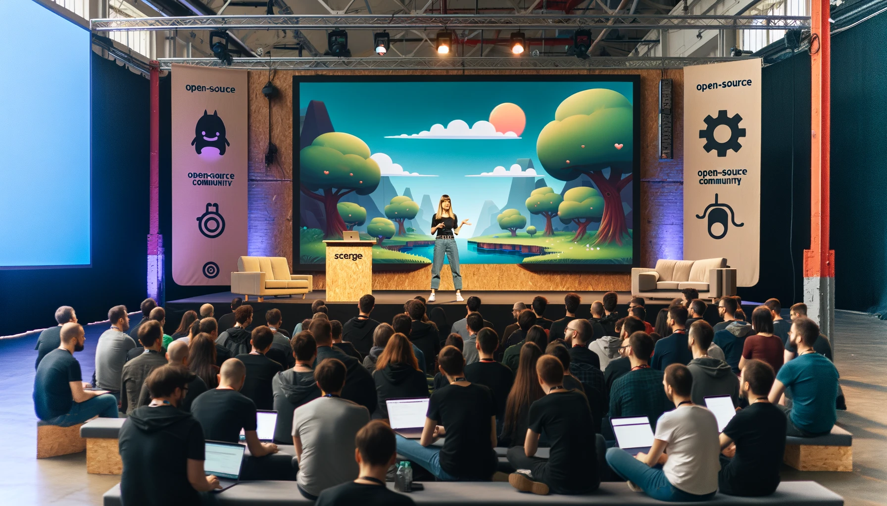
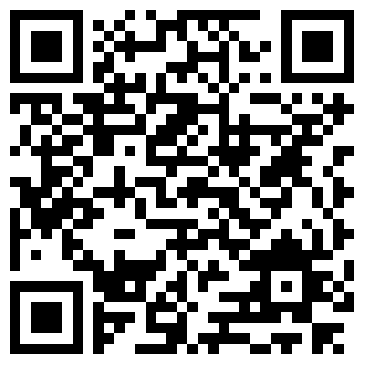

background-image: url(img/background-hero.webp) class: center, middle # Community census: Understanding users & maintainer personas with a community survey ### Niklas Merz <img src="img/cc-by.png" alt="CC BY Logo" style="position: absolute; bottom: 45px; left: 50px; width: 200px;"> <img src="img/logo-h.svg" alt="Logo" style="position: absolute; bottom: 50px; right: 50px; width: 400px;"> ??? * Hello I'm Niklas and welcome to my talk about maintainers and users of open source * Open source communities to me are like villages * Every village has different people and different needs or problems and also interesting relations to other villages * Projects at the ASF can learn a lot from each other and get ideas from each other * That's why I would like to share some insights from a survey we ran at Apache Cordova and my observations from our little village --- # Agenda 0. Why this talk? 1. Facts about me 1. Looking at the village 1. Interesting Survey results 1. Finding people to pick up the work 1. Motivation 1. Types of maintainers 1. Is the project sustainable? ??? * First a roadmap for this talk * Start with giving some context * Then talk about pur survey and what we learned * I'd like to discuss how we get work done in open source and what motivates people * Then there is the fun part - I'd like to introduce some maintainer types * And finally I'd like to bring sustainability into the discussion --- # Why * Many projects have a very small but dedicated maintainer group * Users and maintainers have different perceptions and goals for a project * Check the health of the project * Inform user group about state of the project * Indetify areas for improvement * Attract new maintainers ??? * Many projects have a very small but dedicated maintainer group * Users and maintainers have different perceptions and goals for a project * Occasionally asses the state of the project and could do a **health check for themselves** * From time to time I think projects should inform user group about state of the project * Users & maintainers can work together to indetify areas for improvement * By definining work that needs to be done projects can attract new maintainers --- # Facts about me * Apache Cordova User * Apache Cordova contributor in my old job * Active Committer & PMC * No longer real user of Cordova but maintainer in my free time * I suck at writing CSS * This presentation is styled using CSS <img src="img/cordova.png" alt="Cordova" style="width: 50%; height: 50%;"> ??? * **Some facts about me** * I became a user of Apache Cordova many years ago * Cordova is a framework for **building mobile apps using web technologies** * **My previous job** introduced to developing apps using this approach * In that job we got more and more advanced users and I started contributing * A few years later I became a committer and PMC member * I no longer build apps but I'm helping the project where I can * Fun fact CSS --- # Looking at the village * Every project is different * Is the project sustainable and healthy? * People available for fixes and security issues * Getting releases out and votes done in time * Size, demographics, age & maturity of project, nothing stays the same forever ??? * ** First let's a have a look at a village** * Projects and their communities are very diverse * If you consider using a new project you might ask is the project sustainable and healthy? * Are enough maintainers available for fixes and security issues? * Are releases getting out in time and votes done? * The size, demographics, age and maturity of a project can change over time --- # Running a survey * Collected questions on GitHub * Google Survey * Announced & promoted it on website and social media * Open for a month * Around 200 responses ??? * I was curious about our project and community * At Cordova we ran a survey. * Collected questions on in a simple document on GitHub * Google Survey * Announced & promoted it on website and social media * Accepted answers for a month * Closed and compiled results * got around 200 responses * We consider this a good result because only a fraction of users will respond --- # Interesting Survey results * Good usage data on platforms * Open questions with great feedback * Lot's of work for open questions * Most used platforms match our expectation * Personal feel of pressing issues confirmed * Documentation is the biggest issue ??? * Good usage data on platforms * Open questions with great feedback * Lot's of work for open questions * Most used platforms match our expectation * Deprecated stuff is barely used * Personal feel of pressing issues confirmed * Good ideas to work on * Documentation is the biggest issue --- # Pick up the work * We got some ideas for large tasks from the survey * Scratch your own itch * How about the other more boring or difficult tasks? * Documentation is critical ??? * **After the survey it's probably time to do some work** * Created Large tasks from the survey * Scratch your own itch is how open source usually works * Hard to find someone for other more boring or difficult tasks * How to get better documentation when developers don't like writing docs? * **A lot boils down to motivation** --- # Motivation ### “Creation is an intrinsic motivator, maintenance usually requires extrinsic motivation” @BALUPTON. via isaacs/github (“Working in Public - The making and maintenance of open source software” by Nadia Eghbal.) ??? * I found this great quote in a book about open source * **Intrinsic** * Fix things or build features for my project * This work is usualy getting done fast * Love for the project and community * **Extrinsic** * If you pay someone to work on a project there is extrinsic motivation * General maintenance and community building is usually unpaid * **What about tasks that don't fall in someones motivation window?** * Looking for ideas --- class: center, middle ## Maintainer personas ??? * From my experience there are common types of maintainers * Of course one person can be more than one type * Good to know what types of people are needed to run the project * **Names are totally made up by me** --- class: center, middle # Warning: AI Content Incoming ## ChatGPT painted the following pictures ??? * Short AI warning * This presentation is really lacking in images because I'm even worse at drawing than writing CSS * I tried giving the AI my persona descriptions and it came up with these images * Dont't take these images too seriously --- .left-column[ ### Silent hero * Stays in background * Does a lot of coding work * Important tasks: * Releases * Updates, refactorings * Documentation * Many more * Drives progress ] .right-column[ ] ??? From my experience this is the most important type of maintainer to keep a project alive * Does not need attention or fame * Does a lot of coding work * Important but sometimes boring tasks: * Releases * Updates, refactorings * Documentation * Wants to work effectively and drive progress --- .left-column[ #### Helping hand * Contact person for the community * Answers a lot of user questions * Issue triage and response ] .right-column[ ] ??? * Very important for the outward perception of the project and gaining new users * First contact person for new users and contributors * Keeps track of issues and and user questions --- .left-column[ ### Advocate * Voice of the project * Talks and promotions * Website, Documentation, Podcasts etc. ] .right-column[  ] ??? **Some projects may have a marketing person** * Voice of the project * Talks and promotions * Keep an eyen on website, documentation etc. --- .left-column[ ### Founder/Legend * Started the project or contributor since "the early days" * Lots of deep knowledge * Knows the history behind things * Sometimes hard to reach because they may have moved on to other things ] .right-column[ ] ??? * Started the project or contributor since "the early days" * Lots of deep knowledge * Knows the history behind things * May not be very active in the daily work anymore but stay available * Try to keep them around and respect their experience --- class: center, middle ### Which type are you? ### Do know anybody suitable for open roles in your project? Ideas for personas?  ??? * Now that we have some ideas what type of maintainers are needed in a project * **you can ask youserlf which type you are** * **if you know anybody suitable for open roles in your project** * Feedback on personas on this discussion page behind the qr code --- # Is the project sustainable? * People available for fixes and security issues * Decisions are made and not stalled * Getting releases out (votes) * Technical debt is addressed, refactorings are done successfully * Development getting stuck * Maintainer burnout ??? * People available for fixes and security issues * Decisions are made and not stalled * Getting releases out (votes) * Technical debt is addressed, refactorings are done successfully * Development getting stuck --- # Closing words * Survey are helpful to get a feel for the project * Projects need occassional health checks * **Maintainers** please encourage contributions * **Open source beginners** please just start contributing ??? **Every project is different** **Close with Call to action** * **Consider running a survey for your project** * Projects need occassional health checks * Maintainers please encourage contributions * Open source beginners please just start contributing somebody will guide you for sure --- class: center, middle # Questions or Ideas? --- background-image: url(img/qr.png) .left-column[ ## Niklas Merz ] .right-column[ * E-Mail me: **niklasmerz@apache.org** * Slides: https://niklas.merz.dev/talks ]